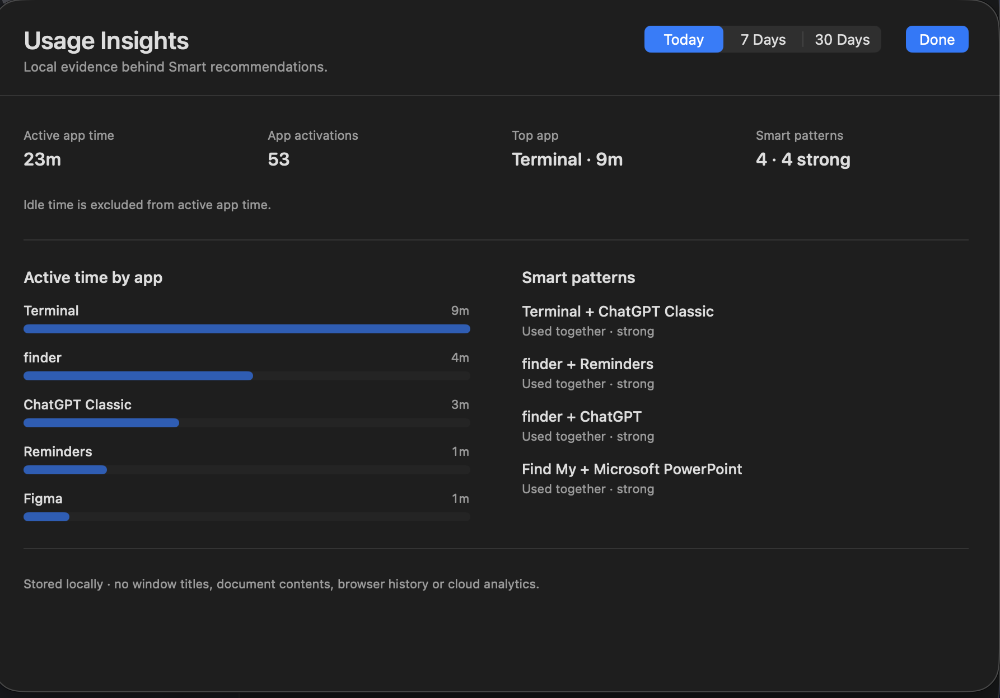

1. Local activity signals
macOS application lifecycle and foreground-change events provide the necessary on-device App Activity / Usage Session signals, including launches, foreground activity, sleep and session-state changes.
Smart Launcher's core recommendations are built from local app activity and usage patterns. They do not depend on Screen Time or require cloud AI for the core recommendation loop.
macOS application lifecycle and foreground-change events provide the necessary on-device App Activity / Usage Session signals, including launches, foreground activity, sleep and session-state changes.
The Smart Engine uses local statistical signals such as recency, frequency, duration, time-of-day and app sequence / cluster relationships.
A fresh install does not pretend to know the user. Recommendations move from cold start toward more stable personalization as local evidence accumulates.
Context such as Calendar participates only after the user enables it and grants the relevant permission. Core launching and basic Smart remain available without it.
Usage Insights exposes local usage signals so users can better understand and inspect what Smart is learning.
The core Smart Engine does not require a backend or cloud AI. Future system-level local intelligence can remain an optional enhancement rather than a core dependency.
Smart Launcher is not designed to build an advertising profile or turn app-usage history into cloud-service input. Core learning data stays device-side; optional context is user-controlled and follows the macOS permission model.
